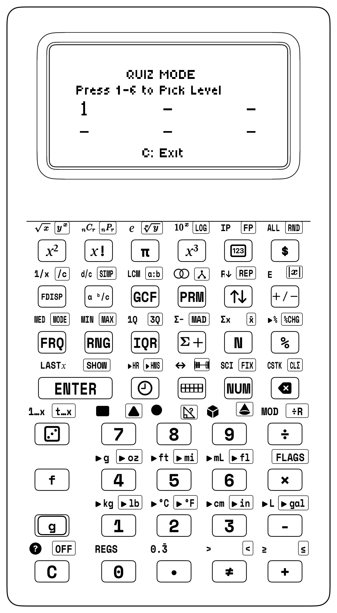
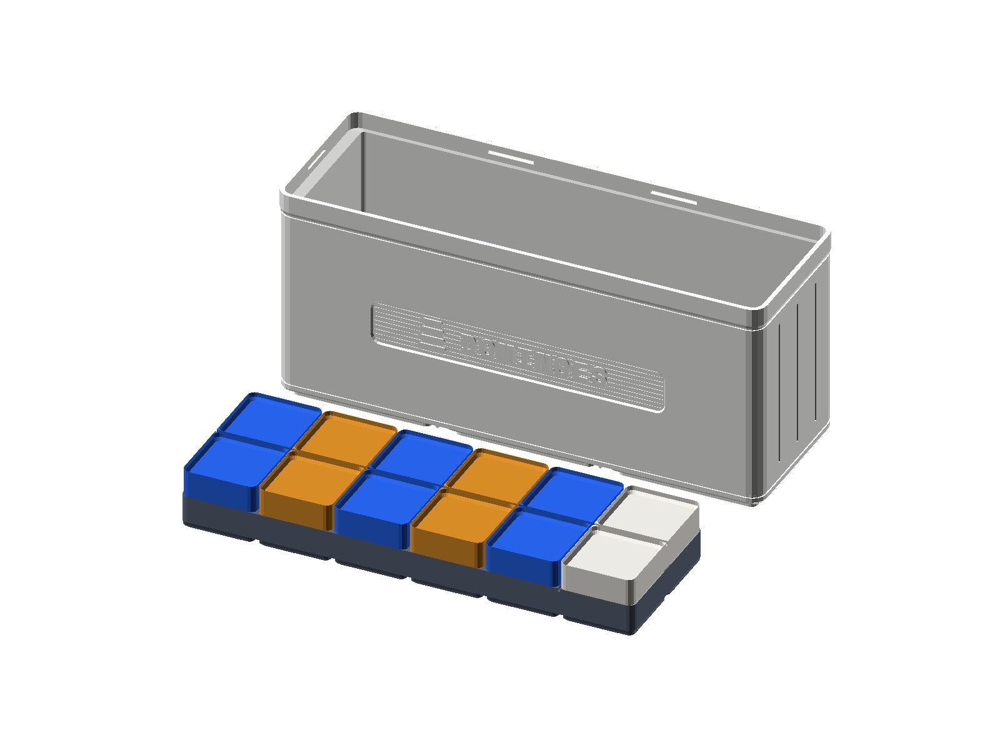
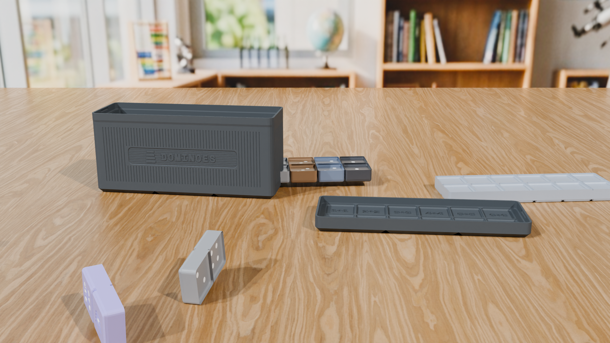

Chapter 8: Mental Math Tricks & The Quiz Game
8.1 Why Fast Number Sense Frees Up Your Brain
Picture a concert pianist sitting down at a grand piano in front of a packed concert hall. Their fingers fly across eighty-eight black and white keys at lightning speed, playing booming chords and fast, sparkling runs. If that pianist had to stop for even half a second to count which fingers belong on middle C, E-flat, and G, the music would instantly stumble into clumsy wrong notes. The pianist can play with feeling, rhythm, and soaring melodies only because their fingers practiced scales and chords until they became automatic. Once the finger moves are second nature, the musician's mind is completely free to focus on the music!
Now travel to Cape Canaveral during the Apollo moon missions. Inside the flight simulators, astronauts like Neil Armstrong and Jim Lovell spent hundreds of hours strapped into practice capsules while flight instructors triggered surprise thruster problems, computer alarms, and navigation puzzles. When you are flying toward the Moon at 25,000 miles per hour, there is no time to flip through a thick instruction book. The astronauts practiced until their hands knew every switch and dial by heart—freeing up their brains to solve big surprises calmly on the spot.
In math, spotting number patterns in a flash works just like a musician's scales or an astronaut's flight simulator.
When you look at \(7 \times 8\) and have to count by sevens on your fingers (\(7, 14, 21, 28, 35, 42, 49, 56\)), your brain gets tired before you even start the fun part of a puzzle. When basic number facts click right away—because you can picture your Math Dominoes, Counting Tile Arrays, and Fraction Towers in your head—your mind stays fresh for bigger adventures.
Your StackCalc SC-6 doesn't replace your brain—it coaches it! With the built-in Quiz Game key ([f] [?]), your SC-6 turns mental-math practice into a fast, fun rhythm game right in your hands.

8.1.1 Starting a 4-Second Speedrun & Stack Mystery Puzzles
Have you ever played a musical rhythm game where notes glide down the screen and you tap the beat right on time, or raced a speedrun clock where each clean streak unlocks a faster puzzle tier? Tapping [f] [?] ([f] + [C]) opens the Quiz Mode Level Picker (⚡ QUIZ MODE / Press 1-6 to Pick Level) showing which levels you have unlocked; tap a number key 1–6 to launch your mental-math speedrun challenge! A puzzle flashes on screen, you type the answer using the number keys (plus . for fractions or [<-] if you want to fix a digit), and you lock in your answer with one tap of [≠] (the =/≠ submit key). After the feedback screen (Press C for Next Quiz) grades your answer, tap [C] (or [≠]) to advance to the next question! Because [≠] submits your quiz answer, [ENTER] and all of your arithmetic keys remain completely free for RPN stack scratch work! Whenever you want to check your running score (SCORE <score> / <total>) during a game, tap [g] [SHOW]; when you are ready to exit Quiz Mode back to your normal calculator stack, tap [NUM] (or press [C] while a question prompt is on screen).
Most quiz apps lock you into multiple-choice guessing games—where you can often spot the right answer just by looking at the last digit without actually doing the math. On the SC-6, there are no multiple-choice buttons to guess from. Instead, the Quiz Engine challenges your brain with two on-screen prompt formats (paired with hands-on Mystery Block bonds on your desk):
- RPN Stack Prompts (
4 [ENTER] 5 +,1/2 [ENTER] 1/4 +, or24 [ENTER] 36 GCF): Used across Levels 1–4 and Level 5 Bands 1–2, showing the two numbers sitting on Shelf \(Y\) and Shelf \(X\) followed by the operation that combines them (Q1/100 | Press ≠ | C: Reset): $\(\mathtt{4 \ \ [ENT] \ \ 5 \ \ +}\)$ - Algebraic & Multi-Step Prompts (
5² + 3² = ?,15% of 60 = ?,4! ÷ 6 = ?, orgcd(48,36) = ?): Used in Level 5 Band 3 and throughout Level 6 (L6: Math Champ), where you picture the multi-step pattern in your head, type the exact answer onto Shelf \(X\), and tap[≠](Q1 | Enter answer, press ≠). - Hands-On Missing-Number Bonds (
3 + ? = 10or8 × ? = 56): Using the physical?Mystery Block on your Quest Scoreboard rail, you can also set up missing-number stories on your desk and solve them by working backward (10 [ENTER] 3 -or56 [ENTER] 8 ÷).
During a live game, the graphic LCD organizes everything into clean horizontal bands: a top scoreboard banner showing your current level (L1: +/- to 10) on the left and your running score (Score: 4/4) on the right, a bold center prompt displaying the active puzzle (3 [ENTER] 7 + or 5² + 3² = ?) and your typed digits, and a bottom status bar (Q1/100 | Press ≠ | C: Reset).
In a heartbeat, your brain spots the ten-partner ("3 and 7 make 10!") and you tap 10 [≠]. The moment you press [≠], the calculator checks your answer in any equivalent form—automatically matching 2/4, 0.5, and 1/2—while its internal stopwatch times your solve against the 4.0-second speedrun clock (CORRECT! <time>s ★ FAST! under 4s, CORRECT! <time>s ✓ in 4–8s, CORRECT! <time>s over 8s, or WRONG: <expected> so you immediately see the right fact before it cycles back 3 and 7 turns later), displaying Mastery: <score>% · Fast Streak: <n> on the second line and Press C for Next Quiz at the bottom. Better yet, you can test every single puzzle right on your calculator stack using the exact moves shown in each level below.
8.2 The 6-Level Game Ladder & Head-to-Head Sprints
How does a well-tuned puzzle game know the exact moment to make a level slightly faster—not so easy that you yawn, and not so steep that you get stuck? During solo play, the SC-6 shuffles each level's puzzle deck automatically across three adaptive bands so every round feels fresh. And when you want to race a friend or run a kitchen-table relay, both players can tap [f] [?] and pick the exact same target level (1–6) to race through that level's 3-band challenge deck head to head.
Every level is organized into three smooth difficulty bands (Band 1: Warm-Up, Band 2: Builder, Band 3: Boss Sprint), progressing from RPN Stack Prompts (4 [ENTER] 5 +) in Levels 1–5 to Algebraic Multi-Step Prompts (5² + 3² = ?) in Level 5 Band 3 and Level 6:
| Level | Screen Tag | Band 1 (Warm-Up) | Band 2 (Builder) | Band 3 (Boss Sprint) |
|---|---|---|---|---|
| Level 1 | L1: +/- to 10 |
Sums & differences within 5 (3 [ENTER] 2 +, 4 [ENTER] 1 -) |
Sums 6 to 10 & ten-frame partners (7 [ENTER] 3 +, 8 [ENTER] 5 -) |
Full \(0\text{--}10\) facts with zeroes & doubles (9 [ENTER] 0 +, 5 [ENTER] 5 +) |
| Level 2 | L2: +/- to 100 |
Multiples of 10 (40 [ENTER] 30 +, 80 [ENTER] 20 -) |
Two-digit \(+ / -\) without regrouping (34 [ENTER] 25 +, 67 [ENTER] 24 -) |
Two-digit \(+ / -\) with regrouping (47 [ENTER] 38 +, 82 [ENTER] 45 -) |
| Level 3 | L3: x/÷ to 12 |
\(\times / \div\) by \(2, 5, 10\) (5 [ENTER] 4 ×, 20 [ENTER] 5 ÷) |
\(\times / \div\) by \(3, 4, 6, 8\) (6 [ENTER] 8 ×, 48 [ENTER] 6 ÷) |
\(\times / \div\) by \(7, 9, 11, 12\) (7 [ENTER] 8 ×, 72 [ENTER] 9 ÷) |
| Level 4 | L4: Fractions |
Like denominators \(+ / -\) (1/4 [ENTER] 1/4 +, 5/6 [ENTER] 1/6 -) |
Related denominators \(+ / -\) (1/2 [ENTER] 1/4 +, 5/6 [ENTER] 1/3 -) |
Unlike denominators \(+, -, \times\) (2/3 [ENTER] 1/4 +, 2/3 [ENTER] 3/4 ×) |
| Level 5 | L5: Mixed Mastery |
Fraction \(+ / \times\) review (3/4 [ENTER] 1/2 +, 2/3 [ENTER] 3/5 ×) |
Two-digit RPN \(+ / -\) sprints (58 [ENTER] 37 +, 91 [ENTER] 46 -) |
Multi-step squares, cubes, roots & percents (5² + 3² = ?, 15% of 60 = ?, √144 + 5 = ?) |
| Level 6 | L6: Math Champ |
Factorials, \(\log_{10}\), powers, \(\Sigma(1..n)\), \(P(n,r)\), \(C(n,r)\), \(\gcd\), \(\text{lcm}\) | Multi-step roots, powers & \(\Sigma k^2\) ((√169 - 5)² = ?, ∑(k²,k=1..4) = ?) |
Compound \(\Sigma k^3\), combinatorics & nested powers (∑(k³,k=1..4) = ?, C(10,4) ÷ C(5,2) = ?) |
Every level is directly paired with your physical StackCalc Block Studios so that mental speed grows naturally out of hands-on building. In Levels 1 and 2, for instance, you build fast number-bond recognition using the Math Dominoes—whose 28 double-six domino tiles train your eyes to spot \(4 + 5 = 9\) and turn-around twins like \([3 \mid 5]\) and \([5 \mid 3]\) without counting dots one by one—and the Quest Scoreboard, whose physical ? Mystery Block slots right into an equation rail to model missing-number puzzles like 3 ? + = 10 before you tap [f] [?] on the keypad.


Let's walk through all six levels of the challenge ladder—from Level 1 (Addition & Subtraction Warm-Up) to Level 6 (Championship Boss Round / L6: Math Champ)—to see how each physical block studio powers your mental shortcuts and how every quiz prompt plays out on the 4-shelf stack.
Level 1: Single-Digit Number Bonds (Sums & Differences to 10)
Level 1 is your Addition & Subtraction Warm-Up: instead of counting dots one by one on your fingers, you use two speedrunner tricks—Double-Plus-One and Ten-Frame Partners—to spot answers in under a second and start building your 5-fast streak.
First, watch how spotting a hidden double (\(4 + 5\)) beats counting on your fingers. When a puzzle like 4 [ENTER] 5 + flashes on the screen, don't count up from 4. Pull the \([4 \mid 5]\) tile from your Math Dominoes and look at how the five side is just a four-square with one bonus dot in the middle. Your eyes lock onto the twin fours (\(4 + 4 = 8\)) and pop the center dot on top (\(8 + 1 = 9\))—letting you key in 9 [≠] and advance your fast streak (Fast Streak: 1). When you switch to [NUM] mode and key 4 [ENTER] 5 [+], Shelf \(Y\) (4) and Shelf \(X\) (5) fuse directly into 9.
Now flip from addition to subtraction by reading the empty spaces in a Ten-Frame (\(10 - 7\)). Subtraction feels twice as fast when you look at what is missing instead of counting backward. Picture a full Ten-Frame Tray holding two rows of 5 counters, and lift 7 counters out (one whole row of 5 plus 2 from the bottom row). You don't even have to count the 7 you took away—your eyes immediately see 3 empty pockets staring back at you, because \(7\) and \(3\) are ten-partners. That lets you solve 10 [ENTER] 7 - right away with 3 [≠], matching the ten-partner bond 10 [ENTER] 7 [-] \(\to\) 3 on the live stack.
Level 2: Two-Digit Mental Addition & Subtraction (To 100)
With five fast solves under 4.0 seconds in Level 1 (Fast Streak: 5), the screen flashes ★ NEXT LEVEL UNLOCKED! ★, and you advance to Level 2. Here you unlock two essential two-digit mental strategies: Jumping by Tens and The Two-Hop Split (plus a bonus 99 Trick for big sums like \(64 + 99\), where you just add \(100\) to get \(164\) and step back \(1\) to land on \(163\)).
Start by turning big tens into friendly ones (\(40 + 30\)). Whenever both numbers end in zero, cover up the zeros in your mind. Putting 4 counters and 3 counters into your Ten-Frame Tray gives \(4 + 3 = 7\). Now treat every counter as a 10-rod: \(4\text{ tens} + 3\text{ tens} = 7\text{ tens}\), which is \(70\). The moment 40 [ENTER] 30 + pops up, 70 [≠] locks in the point—just as stacking four 10-rods and three 10-rods via 40 [ENTER] 30 [+] places 70 on Shelf \(X\).
What if the second number has both tens and ones, like \(80 - 25\)? Use the two-hop split with zero borrowing (\(80 - 25\))! Have you ever tried to borrow across columns in your head on a problem like \(80 - 25\) and lost track of the digits? Hop in two clean steps from left to right instead: start with 8 ten-rods (\(80\)), hop back 2 tens first (\(80 - 20 = 60\)), and then hop back the last 5 ones (\(60 - 5 = 55\)). When the screen shows 80 [ENTER] 25 -, that two-hop jump (\(80 \to 60 \to 55\)) gives you 55 [≠] without a single borrow, matching 80 [ENTER] 25 [-] \(\to\) 55.
Level 3: Multiplication & Division Mastery (Up to \(12 \times 12\))
Level 3 turns the rectangular tile grids from Chapter 4 into fast times-table shortcuts—like slicing tricky rectangles in half, reading the 9s tens-digit code, or using the Split-and-Double Trick (where a rectangle like \(15 \times 14\) gets cut in half one way and doubled the other way to become \(30 \times 7 = 210\)).
First, let's slice the toughest times-table fact in two (\(7 \times 8\)). Ask ten students which multiplication fact trips them up the most, and nine of them will say \(7 \times 8\). Here are two ways to never miss it again: first, slice 7 rows of 8 tiles into 5 rows of 8 (\(40\)) plus 2 rows of 8 (\(16\) from your 24 Array Tiles), which snap together into \(40 + 16 = 56\). Second, notice the four-number countdown march: 5, 6, 7, 8 \(\to \mathbf{56} = \mathbf{7} \times \mathbf{8}\). Either way, 7 [ENTER] 8 × is an instant 56 [≠] solve, and multiplying the rectangle on your keypad with 7 [ENTER] 8 [×] lands squarely on 56.
Once you can build rectangles fast, you can also run them in reverse by cracking the secret 9s tens-digit code (\(72 \div 9\)). Every multiple of 9 up to \(90\) hides a clue right inside its tens digit. Build \(2 \times 9 = 18\) with your 24 Array Tiles: notice that the tens digit (\(1\)) is one less than the number you multiplied by (\(2\)), and the two digits always add up to 9 (\(1 + 8 = 9\)). So when 72 [ENTER] 9 ÷ flashes on the screen, look at the tens digit 7 in \(72\) and add \(1\): \(7 + 1 = 8\). Lock in 8 [≠] for the speed bonus, matching the missing side length 8 when you divide 72 by 9 with 72 [ENTER] 9 [÷].
Level 4: Remainder Division & Fraction Benchmarks
In Level 4, the puzzles shift from whole-number rectangles into leftover tiles ([g] [÷R]) and Fraction Towers ([g] [SIMP]). Instead of writing out slow common-denominator steps, you trade tower pieces in your head and beat the 4.0-second clock with room to spare.
Your first Level 4 warmup is counting full towers and leftover tiles (\(17 \div 5\)) when a division problem doesn't come out even. Ask yourself: how many full towers of 5 fit inside 17? Grab 17 tiles from your 24-Tile Counting & Array Studio and stack them by fives (\(5, 10, 15\)). You get 3 full towers (\(15\) tiles) with 2 leftover tiles in your hand. When solving for the whole number of towers, 3 [≠] locks in the quotient, while 17 [ENTER] 5 [g] [÷R] in [NUM] mode shows 3 on Shelf \(X\) with the remainder perched above it:
| Keystroke | Register T | Register Z | Register Y | Register X | What Happens on the Stack |
|---|---|---|---|---|---|
17 |
0 | 0 | 0 | 17 | Type 17 total tiles onto Shelf \(X\) |
[ENTER] |
0 | 0 | 17 | 17 | Copy 17 up onto Shelf \(Y\) |
5 |
0 | 0 | 17 | 5 | Type the tower height of 5 onto Shelf \(X\) |
[g] [÷R] |
0 | 0 | 2 | 3 | Remainder division: 3 full towers in \(X\), 2 leftover tiles in \(Y\) |
(Shelf \(X\) shows your 3 full towers of 5, while Shelf \(Y\) holds the 2 leftover tiles; tap [x⇄y] anytime you want to bring the remainder to the front).
Next, the game deals fraction puzzles where you trade a half for two quarters (\(1/2 + 1/4\)). Think of quarters in your pocket or look at your Fraction Towers comparison well: one \(1/2\) block is the exact same height as two \(1/4\) blocks (\(2/4\)). Dropping one more \(1/4\) block on top gives you three quarters (\(3/4\)) immediately. You can type 0 [.] 3 [.] 4 [≠] (or [.] 3 [.] 4 [≠]) the instant 1/2 [ENTER] 1/4 + appears—the exact same 3/4 tower height built by . 1 . 2 [ENTER] . 1 . 4 [+].
What happens when you subtract two fractions and shrink the leftover fraction tower (\(5/6 - 1/3\)) into a simpler block? Stand five \(1/6\) pieces (\(5/6\)) next to a \(1/3\) piece in your Fraction Towers kit. Since one \(1/3\) piece equals two \(1/6\) pieces (\(2/6\)), taking away two sixths from five sixths leaves three sixths (\(3/6\))—which is the exact height of a \(1/2\) tower. Typing the simplified answer 0 [.] 1 [.] 2 [≠] on 5/6 [ENTER] 1/3 - grabs the fast bonus in one move, just as . 5 . 6 [ENTER] . 1 . 3 [-] [g] [SIMP] reduces the fraction to 1/2:
| Keystroke | Register T | Register Z | Register Y | Register X | What Happens on the Stack |
|---|---|---|---|---|---|
0 [.] 5 [.] 6 |
0 | 0 | 0 | 5/6 | Enter fraction \(5/6\) onto Shelf \(X\) |
[ENTER] |
0 | 0 | 5/6 | 5/6 | Copy \(5/6\) up onto Shelf \(Y\) |
0 [.] 1 [.] 3 |
0 | 0 | 5/6 | 1/3 | Enter fraction \(1/3\) onto Shelf \(X\) |
[-] |
0 | 0 | 0 | 3/6 | Subtract: \(5/6 - 2/6 = 3/6\) |
[g] [SIMP] |
0 | 0 | 0 | 1/2 | Simplify \(3/6\) to its cleanest fraction block: 1/2 |
Trading those three \(1/6\) blocks (3/6) for a single 1/2 block in your hands matches [g] [SIMP] on the screen. As you climb into Band 3 of Level 4, you unlock the criss-cross twelfths match (\(2/3 + 1/4\)) for denominators like \(3\) and \(4\) that meet at \(12\) (\(3 \times 4 = 12\)). Reach for the twelfths pieces in your Fraction Towers kit: two thirds (\(2/3\)) match \(8\) twelfths (\(8/12\)), and one fourth (\(1/4\)) matches \(3\) twelfths (\(3/12\)). Add \(8 + 3 = 11\) twelfths in your head and type 0 [.] 11 [.] 12 [≠] when 2/3 [ENTER] 1/4 + appears—mirroring . 2 . 3 [ENTER] . 1 . 4 [+] as the stack combines both fractions into 11/12 on Shelf \(X\).
Right after adding twelfths, you can spot a shared six-pack (\(\text{Simplify } 18/24\)) whenever an unreduced fraction appears. Look for the biggest group size that packs both numbers evenly: using your 24 Array Tiles, 18 is 3 six-packs (\(3 \times 6\)) and 24 is 4 six-packs (\(4 \times 6\)). Cancel out the shared six-packs in your head and 18/24 shrinks right down to 3/4 (0 [.] 3 [.] 4 [≠]), the same reduced fraction 3/4 that appears on Shelf \(X\) when you tap . 18 . 24 [ENTER] [g] [SIMP].
Finally, for your Level 4 promotion challenge, watch what happens when two fraction towers spill over the 1-Whole line (\(5/8 + 1/2\)). In your Fraction Towers well, \(1/2\) equals four eighths (\(4/8\)). Add \(5/8 + 4/8\) to get nine eighths (\(9/8\))—which is \(8\) eighths (\(1\) whole tower) with \(1\) extra eighth perched on top (1 1/8). Punch in 1 [.] 1 [.] 8 [≠] (or 0 [.] 9 [.] 8 [≠]) to clear 5/8 [ENTER] 1/2 +, and watch . 5 . 8 [ENTER] . 1 . 2 [+] build 1 1/8 step by step:
| Keystroke | Register T | Register Z | Register Y | Register X | What Happens on the Stack |
|---|---|---|---|---|---|
0 [.] 5 [.] 8 |
0 | 0 | 0 | 5/8 | Enter fraction \(5/8\) onto Shelf \(X\) |
[ENTER] |
0 | 0 | 5/8 | 5/8 | Copy \(5/8\) up onto Shelf \(Y\) |
0 [.] 1 [.] 2 |
0 | 0 | 5/8 | 1/2 | Enter fraction \(1/2\) (\(4/8\)) onto Shelf \(X\) |
[+] |
0 | 0 | 0 | 1 1/8 | Add: \(5/8 + 4/8 = 9/8 =\) 1 1/8 |
Just like snapping eight \(1/8\) blocks into a full \(1\)-whole tower with one \(1/8\) block on top, the stack turns 9/8 into 1 1/8 automatically—and one tap of [f] [d/c] or [a ᵇ/c] flips between 1 1/8, 9/8, and 1.125 anytime you like.
Level 5: Multi-Step Order of Operations, Decimals & Percents
In Level 5, the Quiz Engine combines fraction operations (Band 1), two-digit RPN addition and subtraction sprints (Band 2), and multi-step algebraic expressions with squares, cubes, roots, and percents (5² + 3² = ?, 15% of 60 = ?, √144 + 5 = ? in Band 3) to test whether you can spot which math action happens first—and even spot hidden 100s in multiplication chains like \(4 \times 17 \times 25\) (where \(4 \times 25 = 100\) first, turning the whole problem into \(100 \times 17 = 1,700\)).
The first golden rule in Level 5 is to multiply or divide the array before adding loose singles (\(24 \div 6 + 7\)). Look at 24 ÷ 6 + 7 = ?: if you added \(6 + 7 = 13\) first, \(24 \div 13\) would make a messy fraction. Multiplication, division, powers, and roots are tightly bundled groups, so they always go before loose single counters. Split your 24 Array Tiles into 6 equal rows of 4 (\(24 \div 6 = 4\)), then slide in 7 counters from your Ten-Frame Tray (\(4 + 7 = 11\)) and lock in 11 [≠]. Here is how 24 [ENTER] 6 [÷] 7 [+] unfolds to 11 on the four shelves:
| Keystroke | Register T | Register Z | Register Y | Register X | What Happens on the Stack |
|---|---|---|---|---|---|
24 |
0 | 0 | 0 | 24 | Type 24 tiles onto Shelf \(X\) |
[ENTER] |
0 | 0 | 24 | 24 | Copy 24 up onto Shelf \(Y\) |
6 |
0 | 0 | 24 | 6 | Type 6 equal rows onto Shelf \(X\) |
[÷] |
0 | 0 | 0 | 4 | Divide first: \(24 \div 6 = 4\) tiles per row |
7 |
0 | 0 | 4 | 7 | Type 7 loose counters; \(4\) lifts to Shelf \(Y\) |
[+] |
0 | 0 | 0 | 11 | Add the 7 counters: \(4 + 7 = \mathbf{11}\) |
Watching 4 appear on Shelf \(X\) before 7 arrives makes the order of operations crystal clear. Now apply that exact same rectangle-first habit to dodge the left-to-right subtraction trap (\(15 - 3 \times 4\))—the puzzle that tricks almost everyone who reads strictly left-to-right: 15 - 3 × 4 = ?. If you subtract \(15 - 3 = 12\) first and multiply by \(4\), you get \(48\). Instead, see 3 × 4 as a solid \(3 \times 4 = 12\) rectangle of Array Tiles that must be lifted away from your pile of 15 tiles all at once, leaving \(15 - 12 = \mathbf{3}\) tiles (3 [≠]). When you key 15 [ENTER] 3 [ENTER] 4 [×] [-] to reach 3, your starting 15 waits safely up on Shelf \(Z\) while 3 and 4 multiply into 12 below, and then [-] takes 12 away from 15 to leave 3.
What if a classic prompt wraps parentheses ( ) around two numbers, like (18 - 6) ÷ 3 = ?? Then you unpack the box first (\((18 - 6) \div 3\))! Treat the brackets like a closed gift box: take 6 tiles away from 18 Array Tiles inside the box to leave 12 tiles (\(18 - 6 = 12\)), then deal those 12 tiles equally to 3 friends (\(12 \div 3 = 4\)) and tap 4 [≠]. Keying 18 [ENTER] 6 [-] 3 [÷] in [NUM] mode steps through 4:
| Keystroke | Register T | Register Z | Register Y | Register X | What Happens on the Stack |
|---|---|---|---|---|---|
18 |
0 | 0 | 0 | 18 | Type 18 starting tiles onto Shelf \(X\) |
[ENTER] |
0 | 0 | 18 | 18 | Copy 18 up onto Shelf \(Y\) |
6 |
0 | 0 | 18 | 6 | Type 6 tiles to take away |
[-] |
0 | 0 | 0 | 12 | Solve inside the box first: \(18 - 6 = 12\) |
3 |
0 | 0 | 12 | 3 | Type 3 equal groups; \(12\) lifts to Shelf \(Y\) |
[÷] |
0 | 0 | 0 | 4 | Divide 12 into 3 equal shares of 4 |
Taking away the 6 tiles first leaves 12 on Shelf \(X\), ready to divide cleanly into 3 equal groups of 4. Next, when Level 5 deals mixed numbers like 1 1/2 + 2 1/4, don't waste time turning them into big improper fractions—just snap the whole towers and fraction slices separately (\(1\ 1/2 + 2\ 1/4\))! Snap the whole Fraction Towers together first (\(1 + 2 = 3\)), then snap the half (\(2/4\)) and quarter (\(1/4\)) together into \(3/4\) for a total of 3 3/4 (3 [.] 3 [.] 4 [≠])—the exact mixed number 3 3/4 resting on Shelf \(X\) after 1 . 1 . 2 [ENTER] 2 . 1 . 4 [+].
One last order-of-operations challenge stands between you and Level 6: building the rectangle before adding loose counters (\(8 + 4 \times 5\)) when 8 + 4 × 5 = ? appears. Ignore the temptation to add \(8 + 4\). Spot the \(4 \times 5 = 20\) rectangle first (two full Ten-Frame Trays), toss the 8 loose counters on top (\(20 + 8 = 28\)), and punch in 28 [≠]. Watch 8 [ENTER] 4 [ENTER] 5 [×] [+] assemble 28 without disturbing the 8 until the rectangle is ready:
| Keystroke | Register T | Register Z | Register Y | Register X | What Happens on the Stack |
|---|---|---|---|---|---|
8 |
0 | 0 | 0 | 8 | Type 8 loose counters onto Shelf \(X\) |
[ENTER] |
0 | 0 | 8 | 8 | Copy 8 up onto Shelf \(Y\) |
4 |
0 | 0 | 8 | 4 | Type 4 rows onto Shelf \(X\) |
[ENTER] |
0 | 8 | 4 | 4 | Lift 8 up to Shelf \(Z\) while copying 4 to Shelf \(Y\) |
5 |
0 | 8 | 4 | 5 | Type 5 tiles per row onto Shelf \(X\) |
[×] |
0 | 0 | 8 | 20 | Multiply the rectangle first (\(4 \times 5 = 20\)); \(8\) drops to \(Y\) |
[+] |
0 | 0 | 0 | 28 | Add the 8 loose counters: \(8 + 20 = \mathbf{28}\) |
Holding 8 up on Shelf \(Z\) while the \(4 \times 5 = 20\) rectangle forms on the bottom shelves makes it impossible to fall for the \((8 + 4) \times 5 = 60\) trap.
Level 6: Championship Speed Sprints (L6: Math Champ)
Welcome to Level 6 (L6: Math Champ), the highest tier on the SC-6. Here negative numbers ([+/-]), prime factor building blocks ([GCF] / gcd and [f] [LCM] / lcm), factorials ([x!]), combinations ([f] [nCr]), and high-speed number patterns come together for championship speedruns.
First, watch how you climb toward the ice surface on a submarine depth gauge (\(-14 + 9\)) when a signed-number challenge appears. Picture an Arctic research submarine cruising \(14\text{ meters}\) below the polar ice pack (-14) and rising \(+9\text{ meters}\) toward the surface—or 14 blue sub-zero counters meeting 9 gold warming counters in your Ten-Frame Trays. Nine zero-pairs cancel out, leaving the submarine \(14 - 9 = 5\text{ meters}\) below the ice (-5). To enter a negative answer fast in Quiz Mode, type the digits first and flip the sign with [+/-]: 5 [+/-] [≠], matching the depth gauge reading -5 from 14 [+/-] [ENTER] 9 [+] (with [NUM] toggled off in stack view):
| Keystroke | Register T | Register Z | Register Y | Register X | What Happens on the Stack |
|---|---|---|---|---|---|
14 |
0 | 0 | 0 | 14 | Type 14 onto Shelf \(X\) |
[+/-] |
0 | 0 | 0 | \(-14.0000\) | Flip the sign to \(-14\) (\(14\text{ m}\) below the ice) |
[ENTER] |
0 | 0 | \(-14.0000\) | \(-14.0000\) | Copy \(-14\) up onto Shelf \(Y\) |
9 |
0 | 0 | \(-14.0000\) | 9 | Type the \(+9\text{ m}\) upward climb onto Shelf \(X\) |
[+] |
0 | 0 | 0 | \(-5.0000\) | Cancel 9 zero-pairs: \(-14 + 9 = \mathbf{-5}\) |
After rising 9 meters from \(-14\text{ m}\), the submarine hovers at -5—five meters below the surface ice. Next, for our final championship challenge, gcd(24,36) = ? (or 24 [ENTER] 36 GCF) asks you to spot the biggest shared building block (\(\text{GCF of } 24\text{ and } 36\)). Instead of listing every factor from 1 upward, look at the gap between the two numbers (\(36 - 24 = 12\)) and check if \(12\) divides into both. With your Prime Factor Blocks, \(24\) is two 12-stacks (\(2 \times 2 \times 3 = 12\), times \(2\)) and \(36\) is three 12-stacks (\(12 \times 3\)). They share a full 12 (12 [≠]), the exact common factor 12 returned by 24 [ENTER] 36 [GCF]:
| Keystroke | Register T | Register Z | Register Y | Register X | What Happens on the Stack |
|---|---|---|---|---|---|
24 |
0 | 0 | 0 | 24 | Type 24 onto Shelf \(X\) |
[ENTER] |
0 | 0 | 24 | 24 | Copy 24 up onto Shelf \(Y\) |
36 |
0 | 0 | 24 | 36 | Type 36 onto Shelf \(X\) |
[GCF] |
0 | 0 | 0 | 12 | Find the Greatest Common Factor: \(\text{GCF}(24, 36) = \mathbf{12}\) |
(Bonus [f] [LASTX] move: Because [GCF] saved 36 inside LASTX, tapping 24 [f] [LASTX] [f] [LCM] right afterward checks the matching Least Common Multiple 72 without re-typing 36—completing all six levels of the challenge ladder with your 5-fast streak glowing.)
8.2.1 How Streaks, Mastery Bars & Automatic Level-Ups Work
How does the SC-6 know when you are ready to graduate from warm-up questions to tougher puzzles, or unlock the next level altogether? It watches two things at once—your steady mastery score (Mastery: <score>%) and your fast streak counter (Fast Streak: <n>):
| Quiz Event & Response Time | LCD Feedback Banner | Mastery Point Delta | Fast Streak Effect |
|---|---|---|---|
| Fast Correct (Under 4 seconds) | CORRECT! <time>s ★ FAST! |
+20% Mastery |
Increments Fast Streak (+1) |
| Good Correct (4 to 8 seconds) | CORRECT! <time>s ✓ |
+10% Mastery |
Preserves current Fast Streak |
| Steady Correct (Over 8 seconds) | CORRECT! <time>s |
+5% Mastery |
Resets Fast Streak to 0 |
| Incorrect Submission | WRONG: <expected> |
-10% Mastery (min 0%) |
Resets Fast Streak to 0 (demotes band if Mastery \(< 25\%\)) |
Notice something important about the table above: you don't have to be the fastest player in the room on your very first try to level up. The SC-6 gives you two ways to advance—either by filling your Mastery Score to 100% at a steady pace, or by hitting a 5-Fast-Streak (Fast Streak: 5) in a row under 4.0 seconds each. Within each level, Band 1 \(\to\) Band 2 Promotion unlocks automatically when your Mastery reaches 35% or you hit a Fast Streak of 2, and Band 2 \(\to\) Band 3 Promotion unlocks when your Mastery reaches 70% or you hit a Fast Streak of 4.
The moment your Mastery hits 100%—or you complete a 5-Fast-Streak of five consecutive answers under \(4.0\text{ seconds}\)—the game triggers Next Level Advance (★ NEXT LEVEL UNLOCKED! ★)! For example, when you nail 7 [ENTER] 8 × in Level 3 by keying 56 [≠], the feedback screen flashes ★ NEXT LEVEL UNLOCKED! ★, and tapping [C] lifts you straight to Level + 1 (all the way up to L6: Math Champ). In classroom team relays, players also celebrate four streak milestones across rounds: Bronze Streak (3 fast), Silver Streak (5 fast — automatic level advance), Golden Master (10 fast), and the 20-Streak Flawless Sprint.
8.2.2 Riding a 5-Streak Wave in Level 6
What does it feel like when your mental-math shortcuts and your fingers lock into a rhythm? Try this 5-problem speedrun wave in Level 6 (L6: Math Champ) and watch how five tough-looking problems fall in under 8 seconds total:
| Sprint Round & Prompt | Mental Math Strategy | Your Keystrokes | Elapsed Time & Score |
|---|---|---|---|
1st Round (Streak: 1): 35² = ? |
Multiply tens digit by \((\text{tens} + 1)\): \(3 \times 4 = 12\); attach \(25 \to 1225\) | 1225 [≠] |
\(1.8\text{ s}\) (+20% Mastery, Fast Streak: 1) |
2nd Round (Streak: 2): 48 × 5 = ? |
Cut \(48\) in half \(\to 24\), then multiply by \(10 \to 240\) | 240 [≠] |
\(1.4\text{ s}\) (+20% Mastery, Fast Streak: 2) |
3rd Round (Streak: 3): 1000 - 647 = ? |
Complement from \(999\): \((9-6)(9-4)(10-7) = 353\) | 353 [≠] |
\(1.7\text{ s}\) (+20% Mastery, Fast Streak: 3) |
4th Round (Streak: 4): 144 ÷ 12 = ? |
Picture the \(12 \times 12 = 144\) square array \(\to 12\) | 12 [≠] |
\(1.1\text{ s}\) (+20% Mastery, Fast Streak: 4) |
5th Round (Streak: 5): 25 × 16 = ? |
Four quarters make \(100\): \(16 \div 4 = 4\) hundreds \(\to 400\) | 400 [≠] |
\(1.5\text{ s}\) (+20% Mastery, ★ NEXT LEVEL UNLOCKED! ★) |
The entire 5-problem wave took just \(7.5\text{ seconds}\) of active thinking—completing the 5-fast streak and triggering ★ NEXT LEVEL UNLOCKED! ★.
8.2.3 Solo Warm-Ups, Personal-Best Sprints & 4-Player Relays
You can play the SC-6 Quiz Engine solo on the bus, at the kitchen table, or with friends in a classroom math station. Before starting your daily math lesson, set your SC-6 to your current level and run a focused 120-second warmup sprint against a kitchen timer or classroom clock. Your goal is never to beat someone else across the room—it is to beat your own personal best from yesterday! Jot down your score, accuracy, and longest fast streak in your math logbook. Just like a concert pianist playing two minutes of scales before rehearsal, a daily 2-minute sprint wakes up your left-to-right number sense in 120 seconds flat:
| Date | Target Level | Final Score | Fast Streak | Personal Best? |
|---|---|---|---|---|
| Oct 14 | Level 3 (\(\times/\div\)) | 140 |
4 |
No |
| Oct 15 | Level 3 (\(\times/\div\)) | 180 |
6 |
Yes |
| Oct 16 | Level 3 (\(\times/\div\)) | 210 |
8 |
Yes |
| Oct 17 | Level 4 (Fractions) | 90 |
2 |
New Level |
You can also turn mental math into a team sport with four players and a single SC-6 as the relay baton:
1. Four teammates sit in a row with one SC-6 calculator in the middle of the table.
2. Player 1 launches Quiz Mode and aims for a 3-Fast-Streak (●●●○○) before passing the calculator to Player 2.
3. If a player enters a wrong answer, their streak resets to zero—and their teammates can coach them using the physical blocks on the table until they hit their 3-streak!
4. Player 2 earns 3 more streak dots and passes to Player 3, who passes to Player 4.
5. The team clock stops the instant Player 4 locks in the final 3-streak (12 fast answers across the team).
8.2.4 Speedrun Rescues & Strategy
Before a head-to-head race or team relay, you can clear out your stack shelves and start a fresh round in two taps: exit to [NUM] mode, tap [f] [CSTK] ([f] + [<-]) to clear all four stack shelves (\(X, Y, Z, T\)) to zero, and then tap [f] [?] and pick your target level 1–6 so every player starts from the exact same baseline and difficulty band.
Why do smart mental shortcuts always beat frantic button-mashing in a tournament? Timed paper tests on a classroom wall chart can make anyone's stomach flip, but on the SC-6 your practice is just between you and your screen. When you miss a problem, the game simply shows you the right answer and brings that puzzle back a few turns later so you can nail it—and even when you turn the calculator off ([g] [OFF]), it remembers your unlocked levels, high scores, and streak records.
Better yet, slowing down for one extra breath protects your fast streak. Every wrong guess deducts \(-10\%\) mastery and wipes out your fast streak, while taking a moment to slice \(7 \times 8 = 56\) inside the \(4.0\text{-second}\) window (★ FAST!) earns \(+20\%\) mastery and moves you one step closer to ★ NEXT LEVEL UNLOCKED! ★ (and answering in \(4.0\text{--}8.0\text{ seconds}\) earns \(+10\%\) ✓ while keeping your streak alive). Ten thoughtful answers beat forty wild guesses every single time. And when a fraction prompt appears, picturing the physical blocks before you key keeps you out of the classic button-mashing trap of adding denominators straight across (\(\frac{1}{3} + \frac{1}{4} \ne \frac{2}{7}\)): stand a \(\frac{1}{3}\) tower and a \(\frac{1}{4}\) tower in your Fraction Towers well in your mind, see both trade cleanly into twelfths (\(\frac{4}{12} + \frac{3}{12} = \frac{7}{12}\)), and type 0 [.] 7 [.] 1 2 [≠] to grab the full \(+20\%\) fast bonus. Now let's open the speedrunner playbook and learn eight mental-math shortcuts that let you call out answers faster than a grown-up can type them.
8.3 Eight Mental Math Tricks That Beat Any Calculator
Have you ever watched someone multiply two big two-digit numbers in their head in two seconds flat—faster than a grown-up can even unlock their smartphone and open the calculator app? When you picture your L-Frame Factoring Stage, Place Value Trays, and Counting Tile staircases in your mind, big calculations collapse into simple visual patterns. Here are eight speedrunner tricks—grouped into four fast multiplication shortcuts and four lightning sum and pattern rules—that you can learn in five minutes and use to conquer Level 6 or amaze your friends and family tonight:
8.3.1 Four Fast Multiplication Shortcuts
1. Matching Tens & Ones That Add to 10 (\(43 \times 47\) and \(35^2\)): Whenever two numbers start with the same tens digit (like the \(4\) in \(43 \times 47\)) and their ones digits add up to 10 (\(3 + 7 = 10\)), you can call out the four-digit product in two seconds flat:
$\(\text{First Two Digits} = \text{Tens Digit} \times (\text{Next Whole Number Up}), \qquad \text{Last Two Digits} = \text{Ones Digit} \times \text{Ones Digit}\)$
Try \(43 \times 47\) right now: multiply the tens digit \(4\) by its upstairs neighbor \(5\) (\(4 \times 5 = 20 \to 2,000\)), multiply the ones digits (\(3 \times 7 = 21\)), and snap them side by side into 2,021—verified on the stack with 43 [ENTER] 47 [×] \(\to \mathbf{2021.00}\). That exact same rule squares any number ending in 5 (like \(35^2\)): in \(35 \times 35\), both tens digits are \(3\) and the ones digits add up to \(5 + 5 = 10\), so you multiply \(3\) by the next whole number up (\(3 \times 4 = 12\)) and glue \(5 \times 5 = 25\) onto the end to get 1,225, checked in one tap via 6 [ENTER] 3 [+]. Why do your tiles make this work every time? On your L-Frame Factoring Stage, a \(43 \times 47\) grid holds a \(40 \times 40\) square, two side strips (\(40 \times 3\) and \(40 \times 7\)), and a \(3 \times 7 = 21\) corner; because \(3 + 7 = 10\), the two side strips join into one full \(40 \times 10\) bar, turning the main square into \(40 \times 50 = 2,000\) plus the \(21\) corner!
2. The Four-Quarters Rule (\(\times 25\)): Remember from Chapter 4 how \(36\) quarters grouped into \(9\) stacks of four quarters to make \(900\text{ cents}\)? Because every \(4\) quarters make \(100\text{ cents}\), you can multiply any number by \(25\) in your head by dividing by \(4\) to count how many hundred-stacks you have, and attaching two zeros (\(\times 100\)):
$\(\text{Number} \times 25 = (\text{Number} \div 4) \times 100\)$
For \(28 \times 25\), divide \(28 \div 4 = 7\) and attach two zeros to call out 700 in a blink; for \(52 \times 25\), divide \(52 \div 4 = 13\) to get 1,300 (52 [ENTER] 25 [×] \(\to \mathbf{1300.00}\)). (And if dividing by 4 leaves a remainder of \(1, 2,\) or \(3\) extra quarters, just snap \(25, 50,\) or \(75\) onto the end—so \(19 \times 25\) is \(4\text{ hundreds} + 3\text{ quarters} = \mathbf{475}\)!)
3. Squaring Numbers in the Fifties (\(51^2\text{–}59^2\)): How can you square a number just above \(50\)—like \(54 \times 54\)—faster than someone can type it?
$\(\text{First Two Digits} = 25 + \text{Steps Above 50}, \qquad \text{Last Two Digits} = (\text{Steps Above 50})^2\)$
Since \(54\) sits \(4\) steps above \(50\), the first two digits are \(25 + 4 = 29\) (\(2,900\)) and the last two digits are \(4^2 = 16\)—snap them together into 2,916 and verify in one keystroke with 54 [x²] \(\to \mathbf{2916.00}\). Slicing a \(54 \times 54\) tile square at \(50\) shows why this works: it creates a \(50 \times 50 = 2,500\) square (\(25\text{ hundreds}\)), two matching \(50 \times 4\) strips that join end-to-end into \(100 \times 4 = 400\) (\(4\text{ hundreds}\)), and a \(4 \times 4 = 16\) corner!
4. Multiplying Neighbors Around a Round Number (\(28 \times 32\)): Whenever two numbers sit the exact same distance below and above a round tens number—like \(28\) and \(32\), which sit \(2\) steps below and \(2\) steps above \(30\)—your L-Frame Factoring Stage turns their product into a one-step subtraction. Start with a \(30 \times 30\) square of tiles (\(900\)) and pop a tiny \(2 \times 2\) square (\(4\)) out of one corner, leaving \(900 - 4 = 896\) tiles. If you slice the remaining strip of width \(2\) off the top edge and slide it onto the right edge, it fits flush to form a \(28 \times 32\) rectangle!
$\(\text{Product} = (\text{Center Number})^2 - (\text{Step Distance})^2\)$
For \(28 \times 32\) (centered at \(30\) with a step distance of \(2\)), you simply square the center number (\(30 \times 30 = 900\)) and subtract the tiny corner square (\(2 \times 2 = 4\)) to get \(900 - 4 = \mathbf{896}\), confirmed on the stack via 28 [ENTER] 32 [×] \(\to \mathbf{896.00}\).
8.3.2 Four Lightning Sum & Pattern Shortcuts
5. The Staircase Half-First Rule (\(1\) to \(N\)): In Chapters 3 and 4, you saw how folding a staircase of \(1 + 2 + 3 + \dots + N\) tiles onto an upside-down twin forms a solid \(N \times (N + 1)\) rectangle:
$\(\text{Staircase Sum from } 1 \text{ to } N = (\text{Last Number} \times \text{Next Whole Number Up}) \div 2\)$
When a staircase sum pops up on the 4-second Level 6 boss clock, don't multiply the two big numbers first and then divide by 2! Because \(N\) and \(N + 1\) are neighbors, one of them is always an even number—so cut the even neighbor in half first, and then multiply by the odd neighbor in one fast mental step. To add all 15 numbered balls on a pool table (\(1\) to \(15\)), cut the even neighbor \(16\) in half first (\(8\)) and multiply \(15 \times 8 = \mathbf{120}\). For the 12 days of gifts (\(1\) to \(12\)), cut the even neighbor \(12\) in half first (\(6\)) and multiply \(6 \times 13 = \mathbf{78}\). And for a 20-step tile staircase (\(1\) to \(20\)), cut \(20\) in half first (\(10\)) and multiply \(10 \times 21 = \mathbf{210}\)—matching 20 [ENTER] 21 [×] 2 [÷] \(\to \mathbf{210.00}\) on your stack.
6. The Odd-Sum Midpoint Trick: In Chapter 3, wrapping odd L-shaped borders (\(1, 3, 5, 7, \dots\)) around a corner tile showed why the sum of the first \(N\) odd numbers is always \(N^2\). In a Level 6 boss round, however, the prompt shows the last odd number (like \(1 + 3 + 5 + \dots + 19\)) rather than counting how many odd numbers are in the chain. To find \(N\) in a split second, just average the first and last odd numbers—add \(1\) to the last odd number, divide by \(2\), and square it:
$\(\text{How Many Odd Numbers } (N) = (\text{Last Odd Number} + 1) \div 2, \qquad \text{Odd Sum} = N^2\)$
To add \(1 + 3 + 5 + \dots + 19\), add \(1 + 19 = 20\), cut it in half to get \(N = 10\), and square \(10^2 = \mathbf{100}\) in two seconds flat. For \(1 + 3 + 5 + \dots + 23\), half of \((1 + 23)\) is \(12\), and squaring \(12^2\) gives 144—confirmed in a single tap with 12 [x²] \(\to \mathbf{144.00}\). And for \(1 + 3 + 5 + \dots + 29\), half of \((1 + 29)\) is \(15\), and squaring \(15^2\) with the Ends-in-5 rule (\(1 \times 2 = 2 \to \mathbf{225}\)) beats any button-pusher in the room!
7. Turning Repeating Nines (\(9\text{s}\) and \(99\text{s}\)) into Exact Fractions: Whenever a decimal repeats one digit forever (like \(0.777\dots\)), it always equals that digit over \(9\) (\(\mathbf{\frac{7}{9}}\)). Why? When \(9\) friends share \(1\) whole (\(1 \div 9\)), trading \(1\) whole for \(10\) tenths gives each friend \(0.1\) with \(1\) tenth left over, and trading that tenth for \(10\) hundredths gives each friend \(0.01\) with \(1\) hundredth left over forever (\(\frac{1}{9} = 0.111\dots\)). By the same logic, because \(99\) sits \(1\) step shy of \(100\), a decimal that repeats two digits forever (like \(0.363636\dots\)) equals that two-digit pair over \(99\) (\(\frac{36}{99}\))—divide top and bottom by \(9\) in your head to get \(\mathbf{\frac{4}{11}}\), verified with 0 [.] 36 [.] 99 [g] [SIMP] \(\to \mathbf{4/11}\).
8. The Split-and-Drop \(\times 11\) Shortcut & Divisibility Tug-of-War: Because \(11 = 10 + 1\), multiplying any number by \(11\) just adds the number to a shifted copy of itself (\(\text{Number} \times 10 + \text{Number}\)). For a two-digit number like \(53 \times 11\), pull the two digits apart (5 _ 3) and drop their sum (\(5 + 3 = 8\)) into the middle gap to get \(583\) (or for \(42 \times 11\), \(4 + 2 = 6 \to \mathbf{462}\)). If the middle sum hits \(10\) or more—like \(75 \times 11\), where \(7 + 5 = 12\)—leave the 2 in the middle gap and carry the 1 onto the left digit (\(7 + 1 = 8\)) to get \(825\), confirmed on the stack via 10 [ENTER] 7 [-].
That same proximity to \(10\) gives you a three-second divisibility tug-of-war for \(11\). Look at how close each place-value block sits to a multiple of \(11\): each ten (\(10\)) is \(1\) short of \(11\) (\(11 - 1\)); each hundred (\(100\)) is \(1\) more than \(99\) (\(9 \times 11 + 1\)); and each thousand (\(1,000\)) is \(1\) short of \(1,001\) (\(91 \times 11 - 1\)). Because every step left flips the leftover between \(+1\) and \(-1\), you can test a four-digit number like \(8,426\) by putting the alternating digits on two teams: Team A (ones + hundreds: \(6 + 4 = 10\)) minus Team B (tens + thousands: \(2 + 8 = 10\)) equals \(10 - 10 = \mathbf{0}\). Whenever the two teams tie at \(0\) (or differ by \(11\)), the number divides evenly by \(11\)—as 8426 [ENTER] 11 [g] [÷R] confirms with Quotient \(X = \mathbf{766}\) and Remainder \(Y = \mathbf{0}\).
8.3.3 How Chess Grandmasters and "Human Computers" See Whole Boards at a Glance
Why did we choose 4.0 seconds as the ★ FAST! speedrun window when we engineered the SC-6 Quiz Engine ([f] [?])? That exact four-second benchmark comes from one of the most famous experiments in the history of chess. In the 1940s, the Dutch researcher and international chess master Adriaan de Groot wanted to know what made world chess grandmasters like Max Euwe and Paul Keres so much faster and more accurate than ordinary club players.
To find out, de Groot placed a complex mid-game chessboard holding 25 pieces in front of each player, let them look at the board for just 4 seconds, and then covered the board with a cloth and asked them to rebuild the position on an empty board. Ordinary players could place only 5 or 6 individual pieces before guessing. The grandmasters, by contrast, placed 23 or 24 out of 25 pieces on their exact squares after a single four-second glance!
At first, observers wondered if grandmasters simply had superhuman photographic eyes. Then researchers Herbert Simon and William Chase ran a clever follow-up test: they scrambled the 25 chess pieces randomly across the squares in a way that could never happen in a real game and flashed the board for 4 seconds again. Suddenly, the grandmasters' advantage vanished—they placed only 5 or 6 pieces, no better than a beginner! The secret wasn't a camera-like eye at all: in a real game, a grandmaster never tracks 25 isolated pieces one by one. Instead, their eyes recognize 4 or 5 familiar patterns and chunks—a castled king tucked behind three pawns, a fianchettoed bishop guarding a long diagonal, or a knight-and-queen battery—and hold each multi-piece cluster in their mind as a single unit.
That exact same pattern-chunking superpower is what turned legendary Indian mental calculator Shakuntala Devi (1929–2013) into a worldwide sensation known as "The Human Computer." Born in Bangalore to a father who worked as a circus trapeze artist, tightrope walker, and lion tamer, young Shakuntala learned card and number patterns beside the circus ring at age three and was demonstrating lightning mental arithmetic at universities by age six—before she had ever sat in a formal school classroom. In 1977 at Southern Methodist University in Dallas, she extracted the \(23\text{rd}\) root of a 201-digit number in her head in 50 seconds flat, beating a room-sized Univac 1108 mainframe computer that took more than a minute! And in 1980 in London, she multiplied two randomly chosen 13-digit numbers in her head in just 28 seconds.
Whenever students asked Shakuntala Devi how she moved so fast without losing her place, she pointed out that school worksheets teach children to calculate backward from right to left—starting with the tiny ones column, carrying invisible digits in their heads, and discovering the most important part of the answer last. Mental-math masters and chess grandmasters always read a board from left to right, locking onto the biggest, most meaningful chunks first. When you add \(68 + 27\), instead of adding \(8 + 7 = 15\) and juggling a carried \(1\), you grab the big ten-rods on the left first (\(60 + 20 = 80\)) and snap the \(8 + 7 = 15\) onto the end (\(80 + 15 = \mathbf{95}\)). When 2/5 + 1/5 = ? flashes on the 4-second clock, your eyes don't see four isolated digits to add across—they see two \(\frac{1}{5}\) blocks and one \(\frac{1}{5}\) block standing in your Fraction Towers well (3/5), and when \(17 \div 5\) leaves \(2\) tiles over (17 [ENTER] 5 [g] [÷R] \(\to\) Quotient 3, Remainder 2), you immediately recognize those \(2\) leftover tiles as two fifths (\(\frac{2}{5} = 0.4 \to \mathbf{3.4}\)). Even when splitting \(68 \times 11\) into 6 _ 8, you see that the middle tens gap holds a single digit, so \(6 + 8 = 14\) leaves 4 in the tens place and carries +1 hundred onto the left chunk (\(600 + 140 + 8 = \mathbf{748}\)).
Every time you build an L-Frame square (35 [x²] \(\to 1,225\)), spot a domino double-plus-one (\(7 + 8 = 14 + 1 = 15\)), or lock in an answer with [≠] inside the 4.0-second ★ FAST! window, you are training your eyes to see numbers the way grandmasters see a chessboard: not as lonely digits to count one by one, but as friendly, interlocking patterns you can recognize in a single glance.
Once you get the hang of reading numbers in chunks, you can even extend Shortcut 8's Split-and-Drop \(\times 11\) trick to three-digit numbers! Engineer Jakow Trachtenberg—who developed a complete system of paperless mental arithmetic in the 1940s—called this "adding the neighbor." To multiply a three-digit number like \(342 \times 11\) in your head, write down the outer digits 3 and 2 as your bookends, and drop the sums of each adjacent neighbor pair (\(3 + 4 = \mathbf{7}\) and \(4 + 2 = \mathbf{6}\)) into the middle to get 3,762—which you can verify in one tap on your SC-6 with 342 [ENTER] 11 [×] \(\to \mathbf{3,762}\)!
Compare how a right-to-left paper calculator sees five classic Level 6 prompts versus how a left-to-right pattern chunker sees them in a single 4-second glance:
| Level 6 Boss Prompt | Slow Right-to-Left Digit Juggling | Fast Left-to-Right Visual Chunking (Under 2 Seconds!) |
|---|---|---|
68 + 57 = ? |
Add \(8 + 7 = 15\), carry 1, add \(1 + 6 + 5 = 12\) |
Grab the big 10-rods first (\(60 + 50 = 110\)), then snap on \(15 \to \mathbf{125}\) |
1000 - 647 = ? |
Borrow across three zeros (10, 9, 9) from right to left |
Read \(999 - 647\) from left to right plus \(1\): \((9-6)(9-4)(10-7) = \mathbf{353}\) |
43 × 47 = ? |
Multiply \(7 \times 43\), multiply \(40 \times 43\), and add two rows | Matching \(40\text{s}\) with \(3+7=10\): multiply \(4 \times 5 = 20\) and attach \(3 \times 7 = 21 \to \mathbf{2,021}\) |
342 × 11 = ? |
Write \(342\) twice shifted by one column and add three columns | Bookend 3 and 2, and drop the neighbor sums (\(3+4=7\), \(4+2=6\)) inside \(\to \mathbf{3,762}\) |
1 + 2 + … + 24 = ? |
Add twenty-four numbers one after another | Cut the even neighbor \(24\) in half (\(12\)) and multiply \(12 \times 25 = 3 \times 100 = \mathbf{300}\) |
8.3.4 Kaprekar's Mystery Constant (6,174) & Palindrome Mirror Numbers
Once you start spotting patterns across your math blocks and the 4-second Quiz Engine, even random four-digit numbers turn into miniature puzzle playgrounds. One of the most famous number mysteries in the world was discovered in 1949 by an elementary schoolteacher in Devlali, India named D. R. Kaprekar (1905–1986), who loved inventing number games on his chalkboard so his students would look forward to arithmetic every morning.
One afternoon, Kaprekar discovered a hidden "gravity well" inside four-digit numbers that amazed mathematicians around the globe—now known as Kaprekar's Constant (6,174). Grab your SC-6 right now and test Kaprekar's discovery on any four-digit number whose digits aren't all identical (say, 3,524):
- Step 1 (Biggest Minus Smallest): Arrange the four digits of
3,524from largest to smallest to make5,432(5432 [ENTER]), then arrange the exact same digits from smallest to largest to make2,345, and tap[-]: $\(5,432 - 2,345 = \mathbf{3,087}\)$ - Step 2 (Sort and Subtract Again): Now sort the four digits of
3,087from largest to smallest (8,730) and smallest to largest (0,378), and subtract on the stack (8730 [ENTER] 378 [-]): $\(8,730 - 378 = \mathbf{8,352}\)$ - Step 3 (Bullseye at
6,174!): Sort the four digits of8,352from largest to smallest (8,532) and smallest to largest (2,358), and subtract (8532 [ENTER] 2358 [-]): $\(8,532 - 2,358 = \mathbf{6,174}\)$ - Why
6,174Never Escapes: What happens if you sort the digits of6,174itself from largest to smallest (7,641) and smallest to largest (1,467) and subtract (7641 [ENTER] 1467 [-])? Out pops6,174all over again (\(7,641 - 1,467 = \mathbf{6,174}\))!
No matter what four-digit number you start with—whether it is your street address, the year you were born, or 1,000 (1000 - 0001 = 0999 \(\to\) 9990 - 0999 = 8991 \(\to\) 9981 - 1899 = 8082 \(\to\) 8820 - 0288 = 8532 \(\to\) 6,174)—Kaprekar proved that every single valid four-digit number in the universe falls into 6,174 in at most 7 subtractions! Even three-digit numbers have their own secret whirlpool: if you pick any three-digit number whose digits aren't all the same (like 724), sorting and subtracting (742 [ENTER] 247 [-] \(\to \mathbf{495}\), and 954 [ENTER] 459 [-] \(\to \mathbf{495}\)) always locks onto 495!
Kaprekar also loved Mirror-and-Add Palindrome Races—numbers that read the same forward and backward, like 363 or 4,884. Start with 57 (57 [ENTER]), add its mirror 75 [+] to get 132, then add its mirror 231 [+] to land on the palindrome 363 in two steps! Try 68 (68 + 86 = 154 \(\to\) 154 + 451 = 605 \(\to\) 605 + 506 = 1,111 in three steps), or challenge a friend to find why 89 is the marathon runner of two-digit numbers (24 steps to reach 8,813,200,023,188!).
8.4 Family Speedrun Challenges & Looking Ahead
Gather your family around the table after dinner, pull out a smartphone calculator, and see who can win these three speed challenges before we take our math skills into the Chapter 9 workshop.
8.4.1 Three Family Speedrun Challenges to Try
- The Ends-in-5 Beat-the-Smartphone Bet: Hand a family member a smartphone calculator while you solve \(25^2, 35^2, 45^2, 65^2, 75^2,\) and \(85^2\) out loud using the Matching-Tens Shortcut: multiply the tens digit by the next whole number up and attach \(25\) (\(6 \times 7 = 42 \to \mathbf{4,225}\)), then prove it in one tap on your SC-6 with
[x²]. - The Same-Level Head-to-Head Duel: Both players tap
[f] [?]and select the exact same target level (1–6) at the same time to race through its 3-band challenge deck. Who can hit a 5-Fast-Streak (Fast Streak: 5) and unlock★ NEXT LEVEL UNLOCKED! ★first without a-10%miss? - The 11-Divisibility Tug-of-War Bluff Game: Ask someone to multiply any two- or three-digit number by
11on their phone—or make up a four-digit bluff! Using the alternating-digit Tug-of-War rule from Shortcut 8 (\(\text{Ones} + \text{Hundreds}\) vs. \(\text{Tens} + \text{Thousands}\)), call out whether their number is a multiple of \(11\), then prove it with11 [g] [÷R](Remainder0in Shelf \(Y\))!
8.4.2 Taking Your Number Sense to the Chapter 9 Workbench
When "mathemagician" Arthur Benjamin races a row of calculators on stage, or when NASA mathematician Katherine Johnson verified orbital flight paths by hand, their secret was treating numbers like flexible building blocks reshaped from left to right into friendly hundreds, tens, arrays, and squares. Looking at your Place Value Studio blocks from left to right shows immediately that \(1,000\) is \(999 + 1\)—so you can subtract \(1,000 - 647\) in a glance by taking the first two digits from \(9\) and the last from \(10\): \((9-6)(9-4)(10-7) = \mathbf{353}\). Pairing the Quiz Engine ([f] [?]) with [NUM] stack mode lets you practice 4.0-second speedruns (★ FAST!) and inspect why each shortcut works on the four-shelf display:
| Mental-Math Speed Shortcut | How Your Hands & Eyes See It | One-Line Stack Check ([NUM]) |
|---|---|---|
1. Multiply by 11 (53 × 11) |
Split the two digits apart (5 _ 3) and drop their sum (5 + 3 = 8) in the middle |
53 [ENTER] 11 [×] \(\to \mathbf{583}\) |
2. Multiply by 5 (48 × 5) |
Five is half of a 10-rod: cut the number in half (24) and multiply by 10 |
48 [ENTER] 2 [÷] 10 [×] \(\to \mathbf{240}\) |
3. Multiply by 25 (16 × 25) |
Four quarters make \(\$1.00\): divide by 4 (4) and multiply by 100 |
16 [ENTER] 4 [÷] 100 [×] \(\to \mathbf{400}\) |
4. Ends-in-5 Squares (35²) |
Multiply tens digit by the next number up (3 × 4 = 12) and attach 25 |
35 [x²] \(\to \mathbf{1,225}\) |
5. Difference of Squares (28 × 32) |
Reshape (30 - 2)(30 + 2) on the L-Frame into 30² - 2² = 900 - 4 |
30 [x²] 2 [x²] [-] \(\to \mathbf{896}\) |
6. Left-to-Right Tens First (68 + 27) |
Add the big 10-rods first (60 + 20 = 80), then snap on the ones (+ 15) |
60 [ENTER] 20 [+] 15 [+] \(\to \mathbf{95}\) |
7. Staircase Folding (1 + … + 20) |
Fold into 10 matching pairs of 21 (20 × 21 ÷ 2) |
20 [ENTER] 21 [×] 2 [÷] \(\to \mathbf{210}\) |
8. Divisibility & Primes (4,917 ÷ 11) |
Compare alternating digit teams (7 + 9 = 16 vs. 1 + 4 = 5; diff 11) |
4917 [ENTER] 11 [g] [÷R] \(\to R = 0, Q = \mathbf{447}\) |
Best of all, left-to-right number sense gives you an automatic sanity check at the workbench: before multiplying \(19\text{ gears} \times 21\text{ teeth}\), your mental L-Frame tells you the answer sits right near \(20^2 - 1^2 = \mathbf{399}\), so a typo like 39.9 or 3,990 never fools you. In Chapter 9: Kitchen-Table Inventions & Maker Projects, you will take those skills into the workshop—slicing \(0.20\text{ mm}\) 3D-printer layers, timing pendulums, baking in a solar oven, scaling recipes, meshing gears, and lifting books with water-filled syringes!